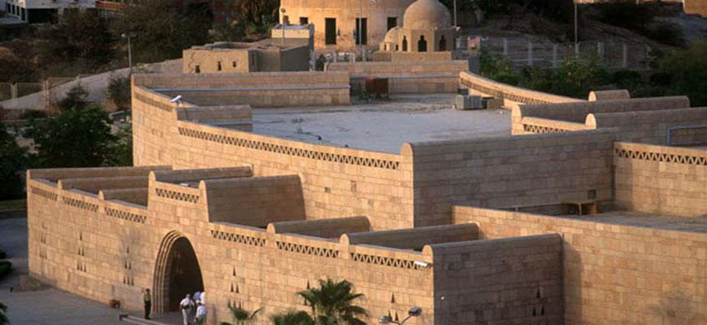
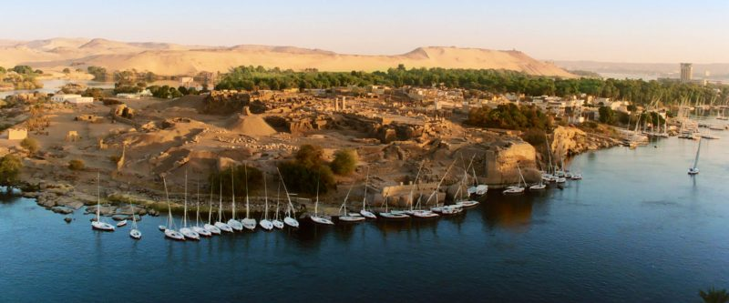
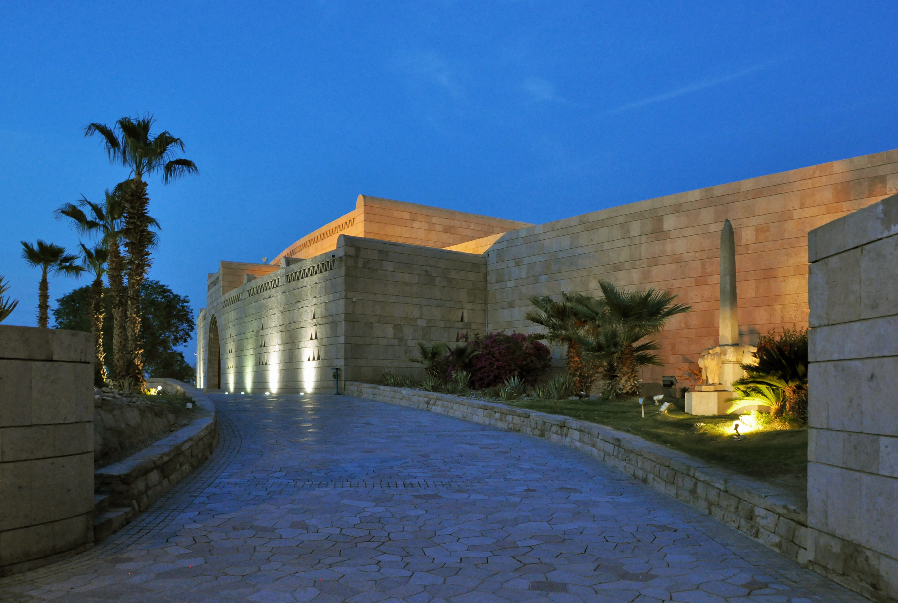

| Nubian Museum  |
The Nubian Museum (officially the International Museum of Nubia) is an archaeological museum located in Aswan, Upper Egypt. It was built to a design by architect Mahmoud El-Hakim for an estimated construction cost of LE 75 million (approximately $22 million at the time). Dedicated to Nubian culture and civilization, it was inaugurated on November 23, 1997, and was awarded the Aga Khan Award for Architecture in 2001. |
| Elephantine  |
Elephantine is 1,200 metres (3,900 ft) from north to south, and is 400 metres (1,300 ft) across at its widest point. The layout of this and other nearby islands in Aswan can be seen from west bank hillsides along the Nile. The island is located just downstream of the First Cataract, at the southern border of Upper Egypt with Lower Nubia. This region above is referred to as Upper Egypt because it is further up the Nile. The island may have received its name after its shape, which in aerial views is similar to that of an elephant tusk, or from the rounded rocks along the banks resembling elephants. |
| Aswan Museum  |
Aswan Museum is a museum in Elephantine, located on the south-eastern side of Aswan, Egypt. It opened to the public in 1912. The museum features artefacts from Nubia, which were housed there during the construction of the Aswan Dam. In 1990, a new department was inaugurated displaying findings that were discovered on Elephantine island itself, such as utensils, weapons, pottery and mummies.[1]
The museum is situated close to the Ruins of Abu, where excavations are still taking place
|